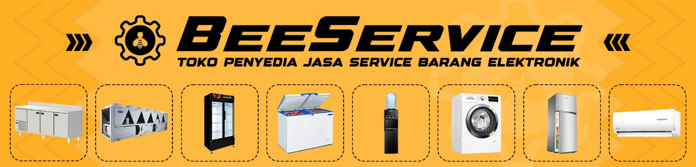
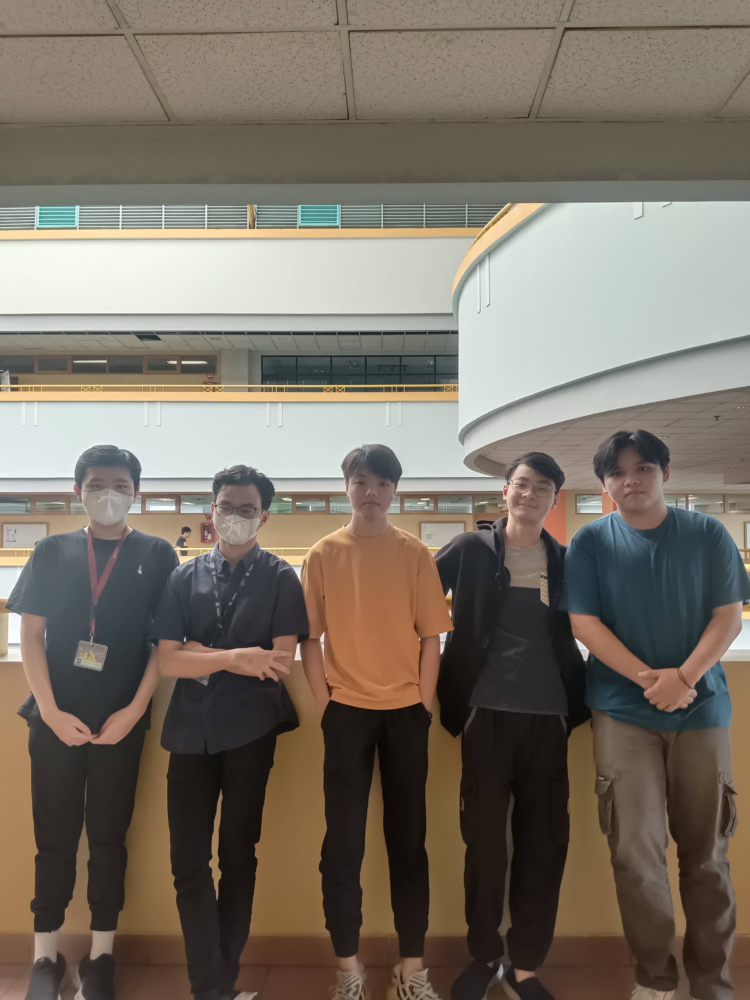

Selamat datang di BeeService, tempat yang tepat untuk memenuhi kebutuhan perbaikan dan pemeliharaan perangkat elektronik Anda. Sebagai distributor yang terpercaya, kami menyediakan akses mudah dan nyaman bagi Anda untuk mengakses jasa service terbaik di industri ini. Dengan jaringan mitra servis yang luas dan terpercaya, kami memastikan bahwa Anda mendapatkan layanan yang handal dan berkualitas untuk semua perangkat elektronik Anda.
Kami memahami betapa pentingnya perangkat elektronik dalam kehidupan sehari-hari Anda, dan kami berkomitmen untuk memberikan solusi terbaik untuk memperbaiki dan merawatnya. Dari televisi hingga kulkas, mesin cuci hingga peralatan dapur, kami memiliki akses ke teknisi ahli yang siap membantu Anda mengatasi masalah dengan cepat dan efisien.
Dengan BeeService, Anda dapat yakin bahwa perangkat elektronik Anda akan ditangani oleh para profesional yang berpengalaman dan terlatih dengan baik. Kami juga memahami bahwa waktu Anda berharga, oleh karena itu, kami bekerja keras untuk menyediakan layanan yang cepat dan tanpa repot bagi Anda.
Jadi tunggu apa lagi? Segera hubungi BeeService dan biarkan kami menjadi solusi terpercaya untuk semua kebutuhan perangkat elektronik Anda. Bergabunglah dengan komunitas pelanggan kami yang puas dan nikmati layanan terbaik hanya dengan BeeService. Kami siap membantu Anda membuat perangkat elektronik Anda berfungsi seperti baru lagi. Hubungi kami sekarang dan rasakan perbedaannya!

Review Customer
Saya sungguh senang dengan layanan BeeService. Melalui website mereka, saya dengan mudah menemukan toko jasa yang profesional untuk menangani perbaikan perangkat elektronik saya. Prosesnya cepat dan efisien, membuat saya merasa diprioritaskan. Terima kasih BeeService! Saya pasti akan merekomendasikan BeeService kepada teman dan keluarga saya.

Antony
Pengalaman saya dengan BeeService sangat memuaskan. Website mereka tidak hanya cepat dalam merespon permintaan perbaikan, tetapi juga memberikan daftar toko jasa yang memberikan solusi akurat dan terjangkau. Saya sangat merekomendasikan BeeService kepada siapa pun yang membutuhkan layanan perbaikan elektronik yang handal.
Blake
Website BeeService benar-benar menyelamatkan saya ketika perangkat elektronik saya mengalami masalah. Melalui website mereka, saya dapat dengan mudah menemukan tim ahli yang ramah dan mampu mengatasi masalah saya dengan cepat, serta memberikan solusi yang bertahan lama. Saya pasti akan menggunakan layanan mereka lagi di masa depan.
Charlie